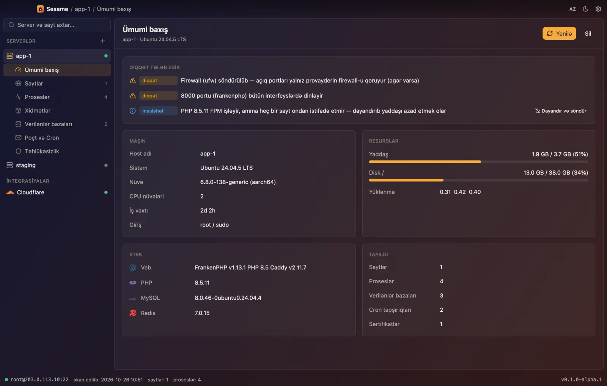
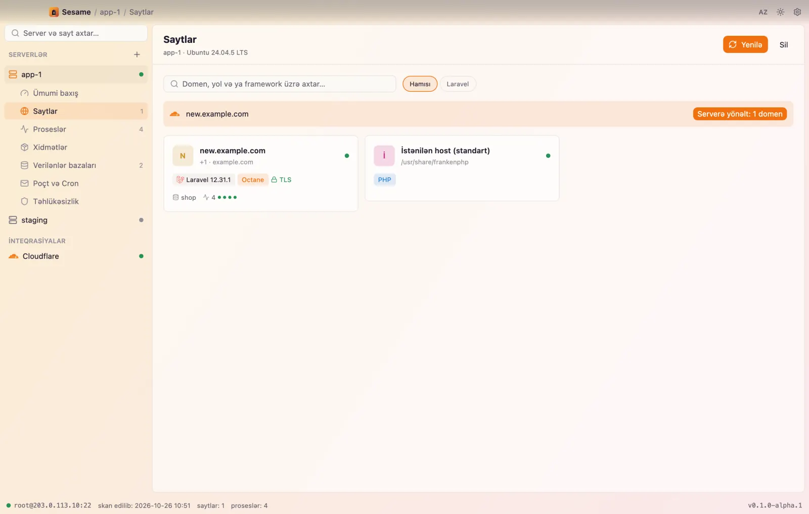
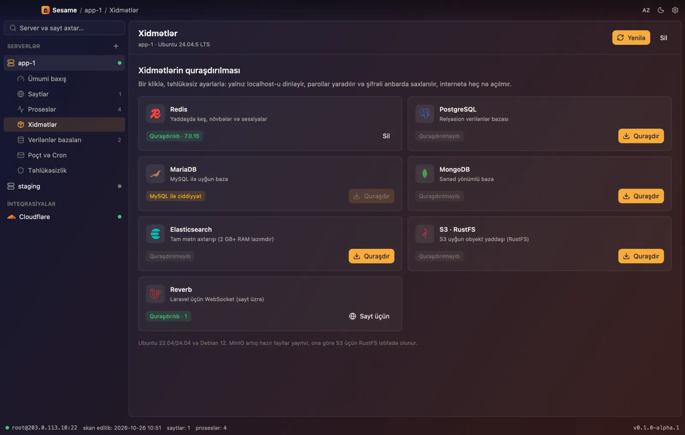
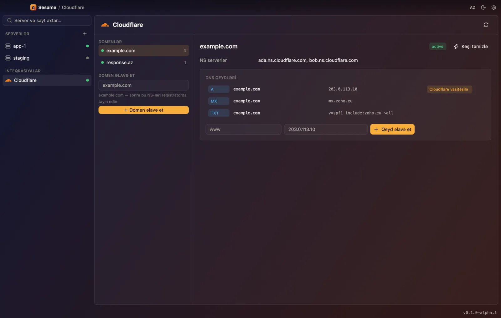
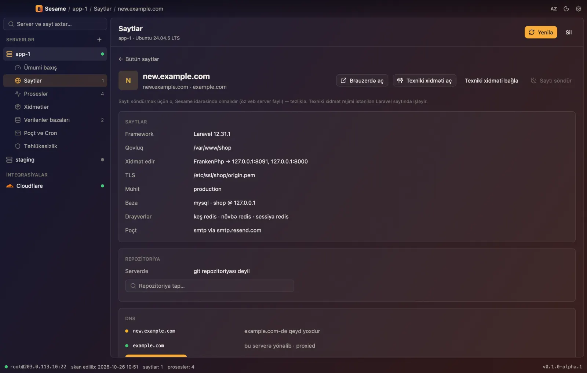

Serverlərinizi açın.
Laravel üçün nativ server meneceri. SSH verin — serverdəki bütün saytları, bazaları və prosesləri tapır və onları sizinlə birlikdə idarə edir.
Pulsuz və açıq mənbə. İndi macOS, sonra Windows. Serverə heç nə quraşdırmaq lazım deyil.

SSH girişindən aydın mənzərəyə bir dəqiqədə.
Qoşulma
ssh-agent, açar və ya parol. Host açarı known_hosts ilə yoxlanılır. Agent, xidmət və ya açıq port yoxdur.
Kəşf
Yalnız oxuyan bir yoxlama Caddy, Nginx və Apache-dəki saytları, Laravel tətbiqlərini, worker-ləri, bazaları, cron-u, sertifikatları və firewall-u tapır.
İdarəetmə
Yeni izolə edilmiş saytlar, bir kliklə xidmətlər, bazalar, GitHub-dan deploy və Cloudflare DNS — hər dəyişiklik əvvəlcə göstərilir.
Hər sayt öz otağında.
Hər yeni saytın öz Linux istifadəçisi, öz PHP-FPM pool-u və ya Octane prosesi, öz baza istifadəçisi və yalnız öz açarlarına çıxışı olan Redis ACL-i var. Veb server public/ qovluğunu oxuyur — .env-i heç vaxt.
- öz istifadəçi
- öz pool
- öz baza
- Redis ACL
- subdomenlər

Bazalar bir kliklə. Siz istəməyincə heç nə.
Redis, PostgreSQL, MariaDB, MongoDB, Elasticsearch, RustFS üzərində S3 və Reverb. Yalnız localhost, parollar yaradılır və şifrəli anbarda saxlanılır. phpMyAdmin və pgAdmin SSH tuneli ilə açılır, internetə yox.
- yalnız localhost
- məlumat saxlanılır
- panellər tunel ilə

GitHub-a push. Domeni yönləndir. Hazır.
Saytı repozitoriya və branch-a bağlayın: Sesame yalnız oxuma deploy açarı əlavə edir, kodu çəkir, asılılıqları qurur, miqrasiyaları icra edir və worker-ləri yenidən başladır. Cloudflare zonaları və qeydləri saytın yanındadır, «bu serverə yönləndir» düyməsi ilə.
- deploy açarları
- miqrasiyalar
- DNS qeydləri
- keşin təmizlənməsi

Öz əlinizlə lazım olanda.
Bir saytın qovluğuna bağlanmış SFTP fayl meneceri və kiçik redaktor. Eyni pəncərədə əsl xterm-256color terminal.
- SFTP qəfəsi
- redaktor
- PTY terminal

Qoy Claude serverlərinizi idarə etsin. Sizin şərtlərinizlə.
Sesame MCP və REST dilində danışır. Agentlər hər şeyi dərhal oxuyur, hər dəyişiklik isə tətbiqdə görünür və siz «İcazə ver» basmayınca icra olunmur. Hər addım agentin adı ilə jurnala yazılır.
# Claude Code
claude mcp add sesame -- sesame mcp
# Claude Desktop, Cursor
{ "mcpServers": { "sesame": {
"command": "sesame", "args": ["mcp"] } } }sesame api-token # shown once
sesame serve # 127.0.0.1:7878
curl -X POST localhost:7878/v1/tools/list_sites \
-H "Authorization: Bearer $TOKEN" \
-d '{"server":"prod"}'sesame add prod root@203.0.113.10
sesame discover prod
sesame do prod new-site shop.example.com \
--database postgres --redis --queue
sesame do prod install redisSizin serverlər, sizin Mac, sizin açarlar.
Əvvəlcə yalnız oxuma
Kəşf heç nə yazmır və .env-dən parol və açar oxumur.
Şifrəli anbar
Master paroldan Argon2id ilə alınan açarla XChaCha20-Poly1305.
Təsdiqlə, sonra icra et
Plan addımları göstərir. Silmədən əvvəl ehtiyat nüsxə və adın yazılması.
Komanda sətrindən kənar
Sirlər stdin ilə ötürülür — heç vaxt argv-də, heç vaxt ps-də.
İmzalı yeniləmələr
Buraxılışlar tətbiqi əvəz etməzdən əvvəl ed25519 imzası ilə yoxlanılır.
Sizin maşınınızda işləyəndə pulsuzdur.
Self-hosted
$0həmişəlik
- Limitsiz server və sayt
- Agentlər üçün MCP və REST
- Cloudflare və GitHub
- Apache-2.0, fork edə bilərsiniz
Sesame Cloud
Sonrakomandalar üçün
- Komanda ilə ortaq serverlər
- Veb və mobil panel
- Rollar, təsdiqlər və jurnal bir yerdə
- Bildirişlər və planlı ehtiyat nüsxələr
Masaüstü tətbiq pulsuz və açıq mənbə olaraq qalır. Cloud hostinq üçün ödənişli olacaq, artıq sizdə olan imkanlar üçün yox.
Suallar
Forge və ya Ploi-dən fərqi nədir?
Onlar serverlərinizə çıxışı saxlayan veb panellərdir. Sesame Mac-inizdə işləyən tətbiqdir və adi SSH ilə danışır: açarlar sizdə qalır, əl ilə qurulmuş serveri də idarəyə götürmək olar.
Bəs Coolify-dan?
Coolify serverdə işləyir və konteynerlər qurur. Sesame serverə heç nə quraşdırmır və klassik Laravel stekini idarə edir: Caddy və ya Nginx, PHP-FPM və ya Octane, supervisor, sistem bazaları.
Serverdə nəyi dəyişir?
Kəşf zamanı heç nəyi. Qalan hər şey əvvəlcədən gördüyünüz plandır; geri qaytarılmaz addımlar adı yazmağı tələb edir, bazanı silməzdən əvvəl ehtiyat nüsxə çıxarılır.
Parollar harada saxlanılır?
Mac-inizdəki şifrəli anbarda, master parol və ya açar faylı ilə açılır. Heç vaxt açıq şəkildə bazada və ya loglarda deyil.
Hansı serverlər dəstəklənir?
Ubuntu 22.04/24.04 və Debian 12, amd64 və arm64. Kəşf əksər Linux serverlərində işləyir.
Serverlərinizi açın.
Alfa versiyanı əvvəlcə test serverində sınayın — və nə tapdığını bizə deyin.
Sesame-i yüklə